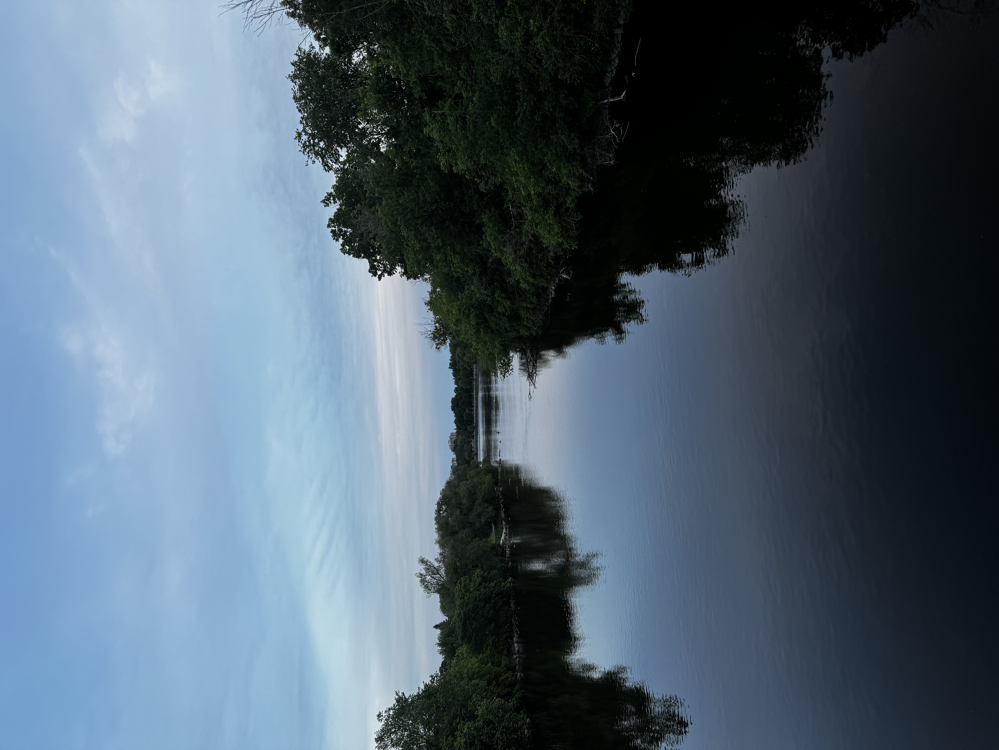

BEAUTIFUL SCENARIES IN THE WORLD
explore the beauty of nature with me
come with me to explore some of the beautiful scenaries in the world
Biography
Visit CN Traveller to View more beautiful scenery pictures.
